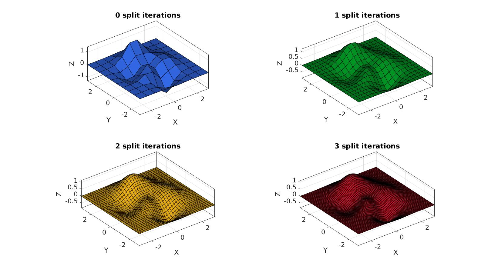
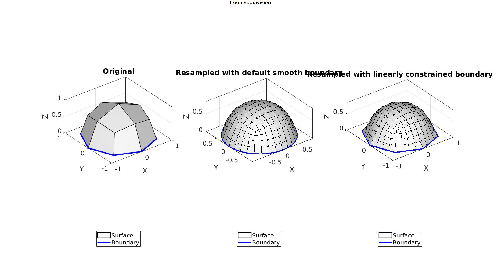
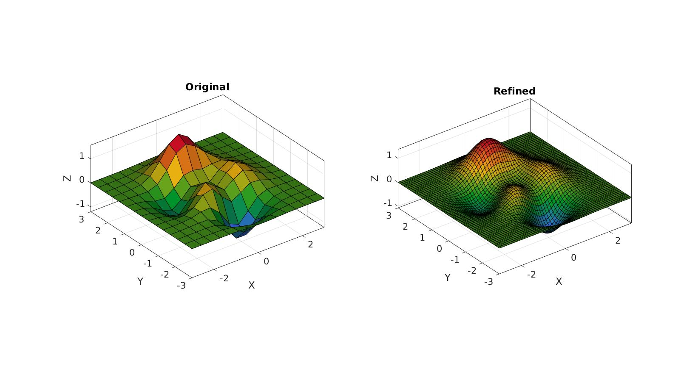
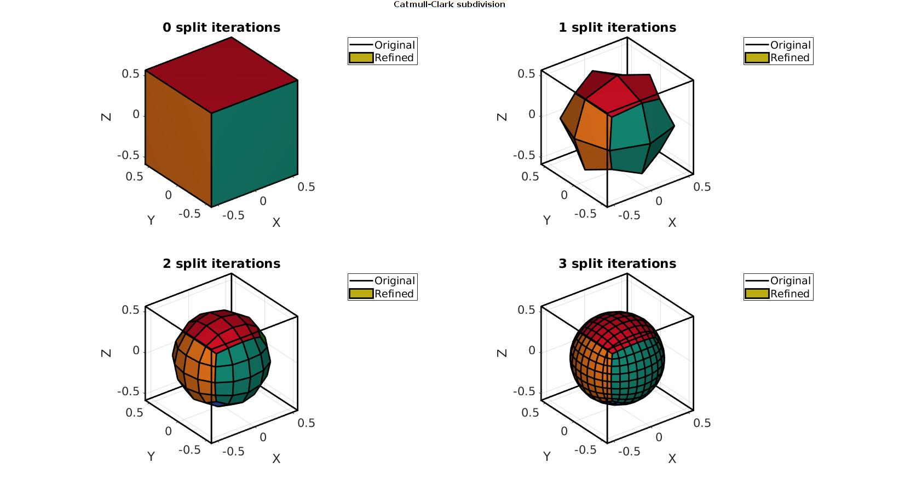
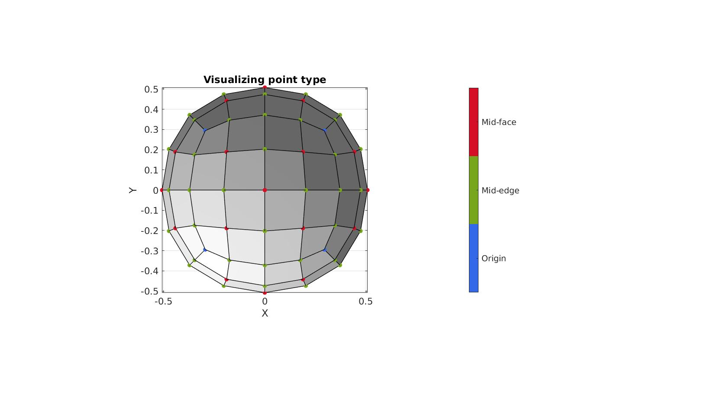

subQuadCatmullClark
Below is a demonstration of the features of the subQuadCatmullClark function
Contents
- Syntax
- Description
- Examples
- Refining a cube using Catmull-Clark subdivision
- Refining 3D quadrilateral surfaces with boundary edges
- Refining 3D quadrilateral meshes using Catmull-Clark method
- Example: Maintaining/resampling face data (e.g. face color)
- Example: Maintaining/resampling vertex data (e.g. vertex color)
- Refining a cube using Catmull-Clark subdivision
- Example: Study vertex type
Syntax
[Fs,Vs]=subQuadCatmullClark(F,V,n);
Description
The subQuadCatmullClark function enables refinement of quadrangulated data. The quadrilateral faces defined by the patch format data F (faces) and V (vertices). Each face is split n times using the specified split method (splitMethod). The user may request the following outputs: The new faces: Fs The new coordinates: Vs Face color labels: C Nodal labels: CV
Four split methods are defined: 1: General linear resampling 2: Linear resampling only in the first direction 3: Linear resampling only in the second direction 4: Catmull-Clarke subdivision
Examples
clear; close all; clc;
Plot Settings
fontSize=15; faceAlpha=1; edgeColor=0.2*ones(1,3); edgeWidth=1.5; markerSize=35; markerSize2=20;
Refining a cube using Catmull-Clark subdivision
[V,F]=platonic_solid(2,1); n=0:1:3; %Number of refinement steps cFigure; gtitle('Catmull-Clark subdivision') for q=1:1:numel(n) [Fs,Vs,Cs]=subQuadCatmullClark(F,V,n(q)); subplot(2,2,q); hold on; title([num2str(n(q)),' split iterations'],'FontSize',fontSize); hp1=gpatch(F,V,'none','k',1,2); hp2=gpatch(Fs,Vs,Cs,'k',1,2); colormap(gjet(6)); axisGeom(gca,fontSize); camlight headlight; legend([hp1 hp2],{'Original','Refined'}) end drawnow;

Refining 3D quadrilateral surfaces with boundary edges
[X,Y,Z]=peaks(10); Z=Z/5; [F,V]=surf2patch(X,Y,Z); n=[0 1 2 3]; %Number of refinement steps fixBoundaryOpt=1; pColors=gjet(numel(n)); cFigure; for q=1:1:numel(n) [Fs,Vs]=subQuadCatmullClark(F,V,n(q),fixBoundaryOpt); subplot(2,2,q); hold on; title([num2str(n(q)),' split iterations'],'FontSize',fontSize); gpatch(Fs,Vs,pColors(q,:),'k'); % patchNormPlot(Fs,Vs); axisGeom(gca,fontSize); camlight headlight; end drawnow;
Refining 3D quadrilateral meshes using Catmull-Clark method
%Create example data with boundary edges (half-sphere) [F,V]=quadSphere(1,1); VF=patchCentre(F,V); logicKeep=VF(:,3)>0; F=F(logicKeep,:); [F,V]=patchCleanUnused(F,V); n=2; %Number of refinement steps fixBoundaryOpt=0; [Fs,Vs]=subQuadCatmullClark(F,V,n,fixBoundaryOpt); fixBoundaryOpt=1; %Option to constrain boundary to be linearly sampled [Fs2,Vs2]=subQuadCatmullClark(F,V,n,fixBoundaryOpt);
cFigure; gtitle('Loop subdivision') subplot(1,3,1); hold on; title('Original','FontSize',fontSize); hp1=gpatch(F,V,'w','k',1,1); hp2=gpatch(patchBoundary(F,V),V,'none','b',1,3); axisGeom(gca,fontSize); camlight headlight; legend([hp1 hp2],{'Surface','Boundary'},'Location','SouthOutside'); subplot(1,3,2); hold on; title('Resampled with default smooth boundary','FontSize',fontSize); hp1=gpatch(Fs,Vs,'w','k',1,1); hp2=gpatch(patchBoundary(Fs,Vs),Vs,'none','b',1,3); hp2.EdgeAlpha=0.9; axisGeom(gca,fontSize); camlight headlight; legend([hp1 hp2],{'Surface','Boundary'},'Location','SouthOutside'); subplot(1,3,3); hold on; title('Resampled with linearly constrained boundary','FontSize',fontSize); hp1=gpatch(Fs2,Vs2,'w','k',1,1); hp2=gpatch(patchBoundary(Fs2,Vs2),Vs2,'none','b',1,3); hp2.EdgeAlpha=0.9; axisGeom(gca,fontSize); camlight headlight; legend([hp1 hp2],{'Surface','Boundary'},'Location','SouthOutside'); drawnow;
Example: Maintaining/resampling face data (e.g. face color)
[X,Y,Z]=peaks(15); Z=Z/5; [F,V,CV]=surf2patch(X,Y,Z,Z); C=vertexToFaceMeasure(F,CV);
Requesting additional output to allow for "book keeping" of face data
[Fs,Vs,Css]=subQuadCatmullClark(F,V,2,1);
The additional output Css contains face indices, i.e. each refined face in Fs belongs to an initial face in F and this mapping is defined in Css. Hence the following operation "picks" out the appropriate color data for each face from the original array.
Cs=C(Css); %Get colors for refined faces from color data of original
cFigure; subplot(1,2,1); hold on; title('Original','FontSize',fontSize); gpatch(F,V,C,'k'); axisGeom(gca,fontSize); colormap gjet; camlight headlight; subplot(1,2,2); hold on; title('Refined','FontSize',fontSize); gpatch(Fs,Vs,Cs,'k'); axisGeom(gca,fontSize); colormap gjet; camlight headlight; drawnow;
Example: Maintaining/resampling vertex data (e.g. vertex color)
Requesting additional output to allow for "book keeping" of face data
VI=[V CV]; %Append color as artificial additional coordinate [Fs,VsI]=subQuadCatmullClark(F,VI,2,1); %Refinement Vs=VsI(:,1:3); %Pick out coordinates from first 3 columns CVs=VsI(:,4); %Pick out resampled vertex data from 4th column
cFigure; subplot(1,2,1); hold on; title('Original','FontSize',fontSize); gpatch(F,V,C,'k'); axisGeom(gca,fontSize); colormap gjet; camlight headlight; subplot(1,2,2); hold on; title('Refined','FontSize',fontSize); gpatch(Fs,Vs,CVs,'k'); axisGeom(gca,fontSize); colormap gjet; camlight headlight; drawnow;
Refining a cube using Catmull-Clark subdivision
[V,F]=platonic_solid(2,1); n=0:1:3; %Number of refinement steps cFigure; gtitle('Catmull-Clark subdivision') for q=1:1:numel(n) [Fs,Vs,Cs]=subQuadCatmullClark(F,V,n(q)); subplot(2,2,q); hold on; title([num2str(n(q)),' split iterations'],'FontSize',fontSize); hp1=gpatch(F,V,'none','k',1,2); hp2=gpatch(Fs,Vs,Cs,'k',1,2); colormap(gjet(6)); axisGeom(gca,fontSize); camlight headlight; legend([hp1 hp2],{'Original','Refined'}) end drawnow;
Example: Study vertex type
An optional 4th output can provide "vertex labels", these define the vertex origins, i.e. whether they stem from the initial coordinates (iteration 0), or from iteration n.
n=2; %Number of refinement steps
[Fs,Vs,~,CV]=subQuadCatmullClark(F,V,n);
cFigure; hold on; title('Visualizing point type','FontSize',fontSize); gpatch(Fs,Vs,'w','k',1,1); scatterV(Vs,50,CV,'filled') axisGeom(gca,fontSize); camlight headlight; view(2); colormap gjet; [~,hc]=icolorbar; hc.TickLabels={'Origin';'Mid-edge';'Mid-face'}; drawnow;

GIBBON www.gibboncode.org
Kevin Mattheus Moerman, gibbon.toolbox@gmail.com
GIBBON footer text
License: https://github.com/gibbonCode/GIBBON/blob/master/LICENSE
GIBBON: The Geometry and Image-based Bioengineering add-On. A toolbox for image segmentation, image-based modeling, meshing, and finite element analysis.
Copyright (C) 2006-2021 Kevin Mattheus Moerman and the GIBBON contributors
This program is free software: you can redistribute it and/or modify it under the terms of the GNU General Public License as published by the Free Software Foundation, either version 3 of the License, or (at your option) any later version.
This program is distributed in the hope that it will be useful, but WITHOUT ANY WARRANTY; without even the implied warranty of MERCHANTABILITY or FITNESS FOR A PARTICULAR PURPOSE. See the GNU General Public License for more details.
You should have received a copy of the GNU General Public License along with this program. If not, see http://www.gnu.org/licenses/.